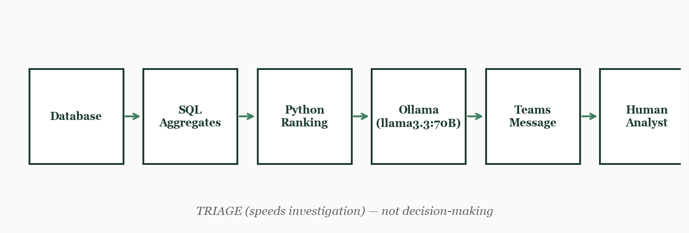

Most analytical organisations do not suffer from a lack of data. They suffer from a lack of attention. Every week, thousands of numbers move: revenues rise and fall, margins drift, volumes shift between products and regions. The bottleneck is not computation. It is deciding where a human should look first.
In theory, dashboards are meant to answer questions. In practice, they mostly create them. An analyst opens a weekly report and faces dozens of charts sliced by product, by region, by time, and by customer segment. Some changes matter. Most do not. The hard part is not seeing that something moved. The hard part is deciding, under time pressure, which movements deserve investigation and which can be safely ignored.
This is a triage problem, not an analytics problem. The goal is not to produce conclusions. It is to reduce the time it takes to get to the first meaningful question. Instead of asking "what is happening?", we ask: "where should a human spend the next hour of investigation?"
The first stage of the pipeline deliberately throws information away. Raw transactional data, individual bets with timestamps and odds, is too granular to reason about quickly. The pipeline collapses it into weekly aggregates per market slice: total turnover, realised margin (what actually happened), expected margin (what the prices implied should happen), and the deviation between the two.
This compression is not about losing information. It is about producing a table where every row can be compared on the same scale. The key judgement call is that a two percent deviation on a slice turning over one million euros is more significant than a twenty percent deviation on a slice turning over ten thousand. Size and deviation both matter. The compressed table captures both in a single unit: impact.
The second step is purely mechanical. Take the compressed table and order the rows by largest absolute deviation from expected, weighted by turnover. No interpretation. No explanation. Just ordering. The human analyst does not yet enter the picture.
The value of this step is that it removes the implicit hierarchy that most teams operate by. In many organisations, what gets investigated first is determined by seniority, recency, or who spoke loudest in the last meeting. The ranking replaces all of that with a single consistent signal. Whatever sits at the top of the list is where money is moving in an unexpected direction, regardless of who owns that market or how important it felt last quarter.
Only at this stage does a language model enter the pipeline, and its role is deliberately narrow. The ranked table is passed to a local language model, in this case llama3.3 running at 70 billion parameters via Ollama, with a strict prompt. The model is instructed to write a short triage note covering three things: where the largest deviations are concentrated, what drill-down questions a human analyst should ask first, and which items are uncertain enough to warrant caution rather than action.
The model is not given context about the business. It is not asked to explain why something happened. It is not asked to make recommendations. It behaves like a junior analyst who has been told to summarise a table and flag what stands out, nothing more. Every statement in the output must be traceable to a row in the input data. The output is a starting point for investigation, not a conclusion.

The pipeline is conservative by design. The language model cannot hallucinate facts because it is only allowed to report what is in the table. It is auditable: the human analyst always has the ranked table alongside the triage note and can verify every claim in seconds. It is fast: the pipeline runs in minutes and lands in a Teams message before the trading day opens.
Most importantly, the system is honest about its own limits. It does not pretend to explain why a deviation happened, only that it happened and that it is large enough to look at first. That restraint is what makes it trustworthy. A system that confidently explains everything is usually wrong some of the time in ways that are hard to detect. A system that clearly states what it does not know is more useful for the same reason.
Triage problems appear everywhere that humans must allocate limited attention across many signals. Hospital emergency departments prioritise patients by severity, not arrival order. Security operations centres filter thousands of alerts down to the handful that need investigation. Customer support queues route the most urgent tickets to the front. The structure is always the same: compress the signal, rank by impact, and surface the result in a form a human can act on quickly.
The role of a language model in this structure is narrow and powerful. It converts a ranked table into readable natural language so a human can spend thirty seconds understanding what needs their attention instead of five minutes reading a spreadsheet. That is the right use of the technology. Not to replace human judgment, but to reduce the time it takes to apply it.
This is part two of a three-part series on working analytically in the gambling industry.
Previous: Pricing & Calibration — how bookmaker odds work as prices and what calibration reveals about systematic errors.
Next: Optimisation & Classification — knapsack-style constrained selection and when simple threshold rules beat complex models.